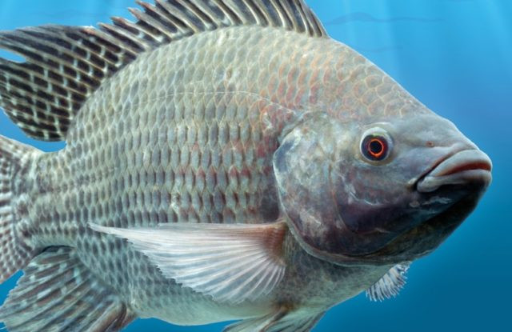

Tilápia-do-nilo
Nome científico:(Oreochromis niloticus Linnaeus, 1758)
Nome comum: Tilápia-do-nilo.
Classificação biológica:
Domínio: Eukaryota.
Reino: Animalia.
Filo: Chordata.
Classe: Actinopterygii.
Ordem: Cichliformes.
Família: Cichlidae.
Gênero: Oreochromis.
Espécie: Oreochromis niloticus.
Nutrição: Onívoro.
Hábitos alimentares: Alimenta-se de algas, plâncton, pequenos invertebrados e detritos orgânicos. É um peixe altamente adaptável, podendo sobreviver em diversos ambientes aquáticos.
Morfologia do corpo: Possui corpo comprimido lateralmente, com escamas cicloides e coloração variável (geralmente cinza ou prateada com listras verticais escuras). Mede entre 30 e 60 cm de comprimento e pode pesar até 4 kg.
Comportamento: É um peixe de hábitos diurnos, vivendo em cardumes. Conhecido por sua resistência e capacidade de se reproduzir rapidamente, é amplamente cultivado em aquicultura.
Principais Presas: Algas, plâncton, pequenos invertebrados e detritos orgânicos.
Principais Predadores: Peixes maiores, aves aquáticas e humanos.
Locais habitados
Distribuição: Originária da África, foi introduzida em todo o mundo, incluindo o Brasil, onde é amplamente cultivada em tanques e açudes.
Habitat: Habita lagos, rios, açudes e represas, preferindo águas quentes e pouco profundas.
Reprodução: A reprodução ocorre durante o ano todo, com desova múltipla. A fêmea guarda os ovos na boca até a eclosão, que ocorre em cerca de 3 a 5 dias. Os alevinos são protegidos pela mãe por algumas semanas.